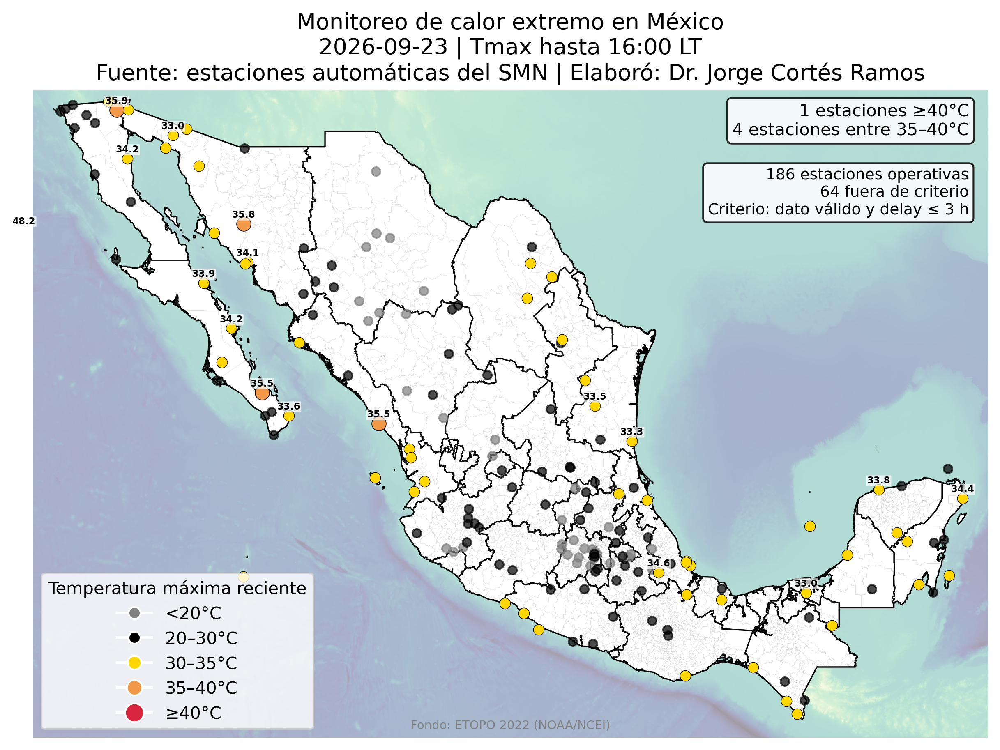

Disponibilidad de datos CLICOM
Estado reciente de la información meteorológica disponible por estación en México.
Temperatura máxima
Monitoreo de la temperatura máxima reciente registrada por estaciones automáticas del SMN.

Ciclones tropicales
Distribución espacial histórica y regiones de mayor recurrencia de ciclones tropicales.
Ondas de calor
Monitoreo de eventos de temperatura extrema basado en umbrales climatológicos.
Monitoreo de ondas de calor
Los productos operacionales serán incorporados progresivamente a este módulo.
En desarrolloViento costero
Monitoreo de anomalías del viento en el Golfo de California y Pacífico de Baja California Sur.
Anomalías de viento costero
Este módulo incorporará los productos ERA5 actualmente en desarrollo.
En desarrolloPrecipitación
Vigilancia de precipitación, anomalías y condiciones hidroclimáticas.
Monitoreo de precipitación
Los productos operacionales serán incorporados conforme avance el desarrollo del sistema.
En desarrollo